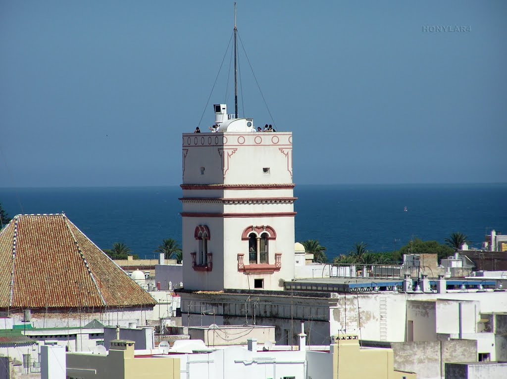
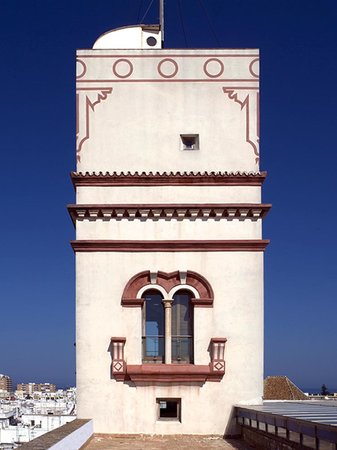
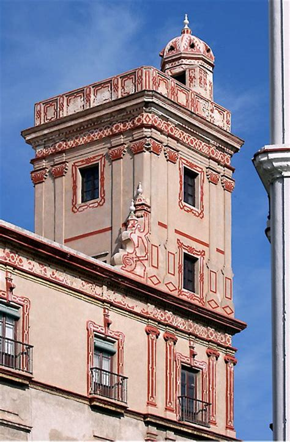
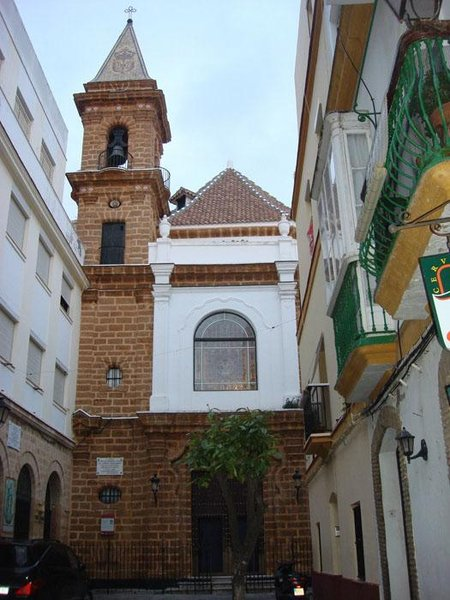
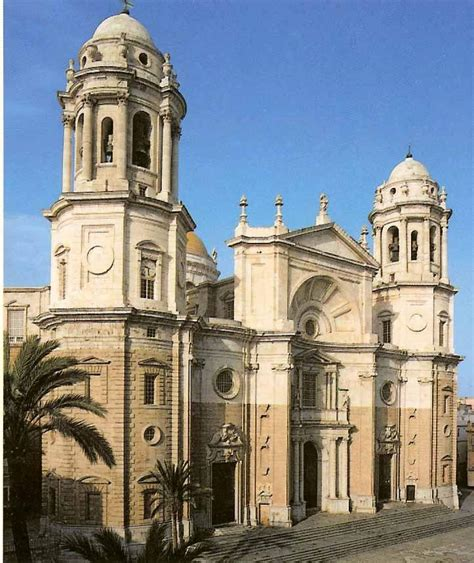
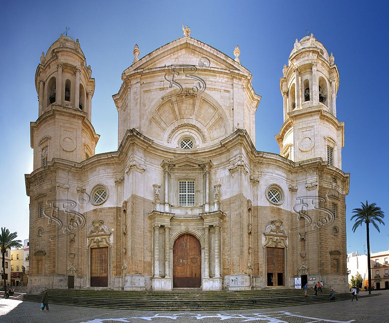
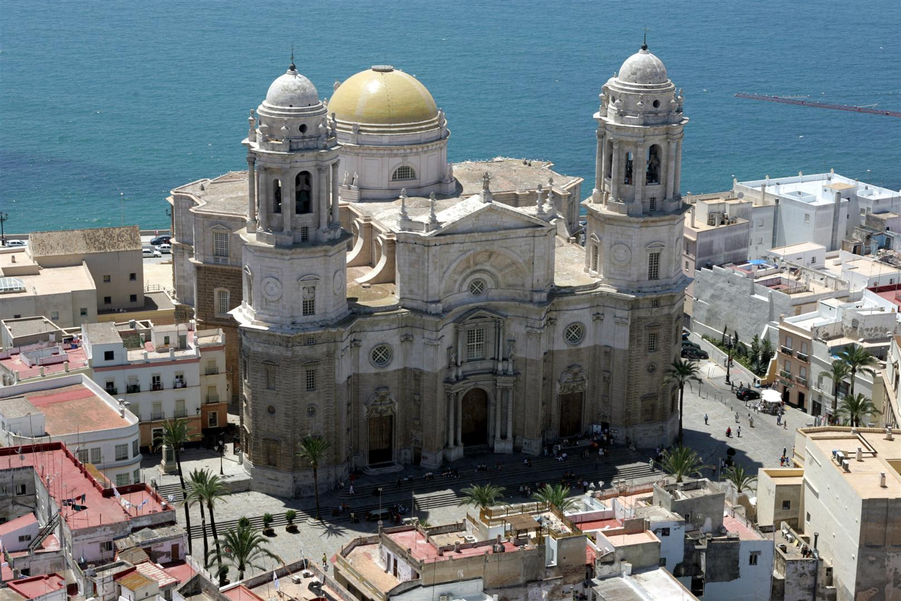
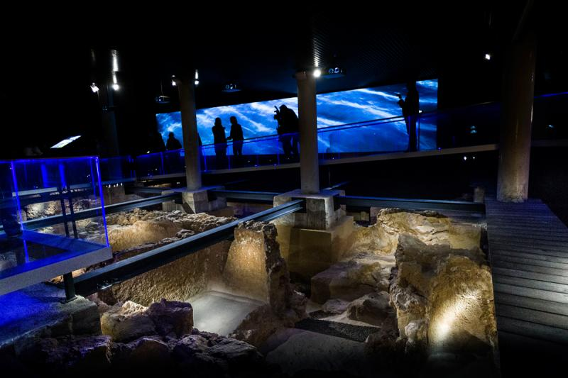
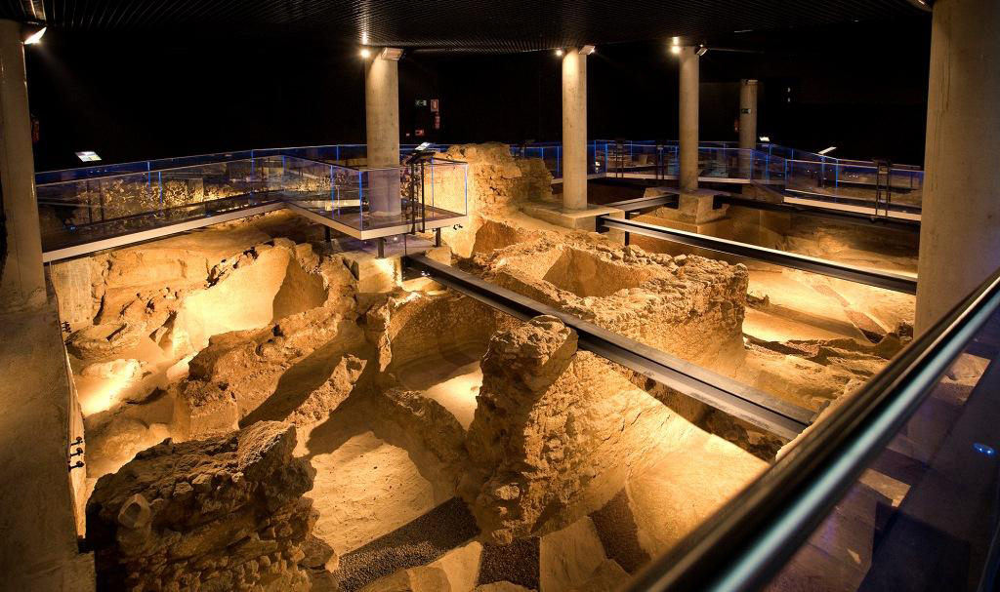
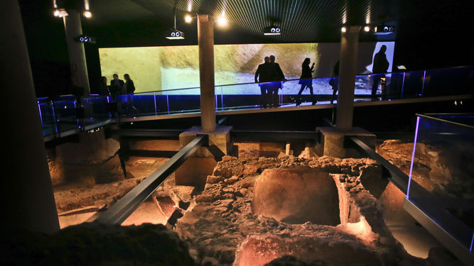

Torre Tavira



La Torre Tavira es una torre vigía y el punto de mayor altura de la ciudad vieja de Cádiz, a 45 metros sobre el nivel del mar. Se encuentra situada en la Casa-Palacio de los Marqueses de Recaño (actual Conservatorio de Música de Cádiz), en la esquina entre las calles Marqués del Real Tesoro y Sacramento, y fue construida en el siglo XVIII en estilo barroco. Designada torre vigía oficial del puerto gaditano en 1778 por ser la de alta cota, recibe el nombre de su primer vigía, el teniente de fragata Antonio Tavira.
Dirección:
Calle Marques del Real Tesoro 10
CP:
11001
Localidad:
Cádiz, España
Teléfono:
+34 956 21 29 10
Pagina web:
www.torretavira.com
La viña

La Viña es un barrio del centro histórico de la ciudad de Cádiz, España, perteneciente al distrito. Está situado en el extremo noroccidental de la ciudad y delimitado por las calles de la Rosa y La cruz Verde hacia el mar, que lo separan de los barrios de El Balón y San Juan respectivamente.
El nombre del barrio está relacionado con su pasado como lugar donde se cultivaba la vid. A partir del siglo XVIII comienza a edificarse la zona, debido al fuerte incremento demográfico experimentado en la ciudad a raíz del auge del comercio con América. Por su situación alejada del puerto, no despertó interés a los cargadores a Indias, por lo que fue habitado por clases populares dependientes de la actividad pesquera de la playa de La Caleta.
CP:
11002
Localidad:
Cádiz, España
Catedral de Cádiz



La Santa y Apostólica Iglesia Catedral de Cádiz es la sede episcopal de la diócesis de Cádiz y Ceuta, en España. Es un edificio de estilo barroco y neoclásico. Se empezó a construir en 1722 y no se terminó hasta el 28 de noviembre de 1838.
Recibe el nombre de la "Santa Cruz sobre el Mar" o "Santa Cruz sobre las Aguas", aunque los gaditanos la denominan catedral Nueva en contraposición a la catedral Vieja, edificada en el siglo XVI sobre la antigua catedral gótica mandada construir por Alfonso X El Sabio, y que hoy cumple las funciones de iglesia parroquial.
Está situada en el centro histórico de Cádiz, casi al borde del mar, y es visible desde casi cualquier punto de la ciudad. Tiene horario de visitas tanto para el interior del templo como para la Torre del Reloj. La misma entrada a la catedral sirve para acceder al museo Catedralicio, situado en la plaza Fray Félix, junto a la catedral Vieja.
Dirección:
Plaza Catedral s/n
CP:
11005
Localidad:
Cádiz, España
Teléfono:
+34 608 09 04 24
Pagina web:
www.catedraldecadiz.com
Yacimiento arqueológico Gadir



La ciudad de Gadir es uno de los asentamientos fenicios más antiguos de Occidente. Ya en el primer cuarto del primer milenio antes de Cristo se produjeron las primeras arribadas de tanteo por los fenicios de Tiro, fundando una colonia estable en una fecha que hasta los descubrimientos hallados bajo el Teatro del Títere eran difíciles de precisar.
La escasez de restos arquitectónicos de asentamientos fenicios en todo el mediterráneo, hacen del yacimiento arqueológico Gadir, un lugar imprescindible para descubrir las formas de vida de la desaparecida cultura fenicia.
Dirección:
C/ San Miguel, 15
CP:
11001
Localidad:
Cádiz, España
Teléfono:
+34 956 22 63 37
Pagina web:
yacimiento arqueológico Gadir